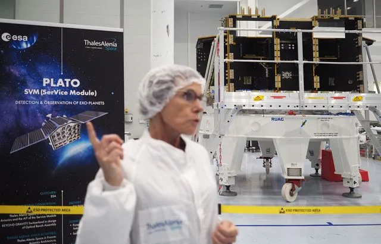

Plato, le satellite européen qui va chercher « une deuxième Terre dans l’Univers »

Existe-t-il, dans l’immensité du cosmos, une jumelle de la Terre ? Un autre endroit où la vie aurait pu se développer, sous une forme ou une autre. Depuis plus de trente ans, les observations d’exoplanètes (5.346 recensées à ce jour) et les promesses d’en découvrir encore un nombre presque incalculable poussent les scientifiques à imaginer que non, nous ne serions effectivement pas seuls dans l’Univers.
A Cannes, chez le fabricant de satellites Thales Alenia Space (TAS), l’Agence spatiale européenne (Esa) travaille sur une nouvelle mission qui partira à la recherche d'« une deuxième Terre dans l’Univers ». Ou au moins d’autres environnements « habitables » en dehors de notre système solaire. 20 Minutes a pu se rendre dans les salles blanches où le télescope Plato* et ses 26 yeux prêts à scruter les confins de notre galaxie se préparent.
04/04/23 à 13h52